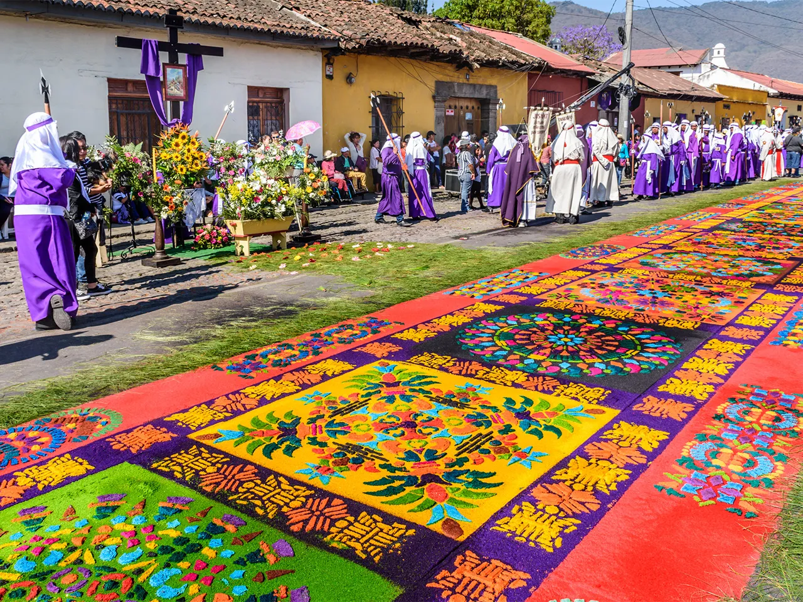

Buena Vibra
Ale Mendoza
A Guatemala (oficilamente República da Guatemala) é um país que se localiza na América do Norte. O território da Guatemala possui aproximadamente 108.889 km². Sua capital é a cidade Nueva Guatemala de la Asunción (mais conhecida como Ciudad de Guatemala, ou em português: Cidade de Guatemala).
Moeda: A moeda oficial é o Quetzal (GTQ), que leva o nome do pássaro-símbolo nacional, considerado sagrado pelos maias. 1 Quetzal vale 0,69 Real Brasileiro
Valor do PIB: O valor do PIB da Angola em dólares americanos é de 100 bilhões.
Dança: Uma das danças mais tradicionais da Guatemala é a Danza del Venado
(em português: Dança do Veado), que representa a caça ao veado, um animal
sagrado na guatemala. Os dançarinos se caracterizam e fazem movimentos de
dança para simular a caça.
Abaixo temos um vídeo de como é essa dança.
Música: A música é marcada pela mistura cultural. O marimba, instrumento nacional, é a base de muitos ritmos e canções típicas. Além disso, estilos modernos como salsa, cumbia e reggaeton também fazem parte do cotidiano musical. Abaixo temos um player com uma música no estilo Reggaeton
Ale Mendoza
Religiosidade: A religiosidade guatemalteca é bastante diversa. A maioria da população é
cristã, principalmente católica e evangélica, mas ainda hoje sobrevivem
práticas espirituais de origem maia, que se misturam às tradições
religiosas.
Abaixo temos uma imagem do dia de Corpus Christi, uma comemorção
católica.

Comida: A culinária guatemalteca combina ingredientes indígenas e espanhóis. Um prato muito tradicional é o Pepián, um ensopado espesso feito com carne, legumes e especiarias. O Kak’ik, uma sopa de peru bem temperada, também é bastante conhecido.
Pepián
Kak’ik
Apesar de sua riqueza cultural e natural, a Guatemala enfrenta desafios importantes. Questões como a desigualdade social, a pobreza, a violência urbana e o acesso limitado à saúde e educação ainda precisam de atenção e melhorias.